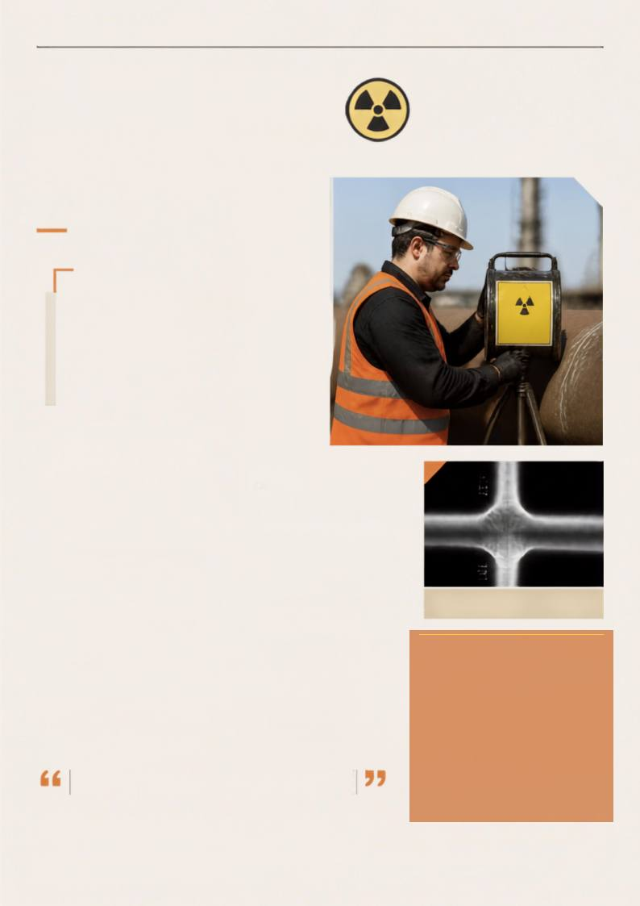

RADIOLOGIA
INDUSTRIAL
A radiologia industrial
é uma ferramenta
essencial para garantir
a integridade
e a segurança de
estruturas,
equipamentos e
componentes em
diversos setores.
RADIOATIVO
IMAGEM ILUSTRATIVA
TECNOLOGIA, SEGURANÇA E CONFIABILIDADE
PARA DECISÕES QUE FAZEM A DIFERENÇA.
PERSPECTIVAS DE MERCADO
RADIOLOGIA INDUSTRIAL
Precisão que revela o que os olhos não veem.
CATEGORIA II-AMARELA
A Radiologia Industrial é uma área que vem conquistando cada vez
mais espaço em diferentes setores da indústria. Seu trabalho está
diretamente relacionado à qualidade, à segurança, à confiabilidade dos
processos e à avaliação de materiais e estruturas.
É um campo que exige conhecimento técnico, responsabilidade e,
sobretudo, profissionais preparados para lidar com tecnologias em
constante evolução. Entre os principais segmentos estão a Radiografia
Industrial, aplicada à inspeção e à avaliação da integridade de soldas,
estruturas e componentes; os Medidores.
Nucleares, utilizados no controle e no monitoramento de diferentes
processos industriais; e os Irradiadores Industriais e Aceleradores
Lineares, presentes em aplicações que envolvem processamento,
pesquisa e tecnologia.
Há ainda outras áreas que utilizam fontes de radiação e tecnologias
nucleares em processos de inspeção, controle de qualidade, medição,
pesquisa e desenvolvimento.
Flávio Silveira de Vieira é Técnico e
Tecnólogo em Radiologia Médica,
pós-graduado em Docência no Ensino
Superior. Possui mais de 18 anos de
experiência na área de Radiologia
Industrial, com atuação em Proteção
Radiológica, Medidores Nucleares,
Transporte de Materiais Classe 7,
Aceleradores
Lineares,
Técnicas
Analíticas,
Radiografia
Industrial,
Gamagrafia e Irradiadores de Grande
Porte,
entre
outras
áreas.
Atua
também como docente há 16 anos em
cursos de Radiologia, abrangendo
formação
técnica,
pós-técnica
e
graduação em Radiologia.
RADIOGRAFIA DE JUNTA – RESULTADO DA
INSPEÇÃO - IMAGEM ILUSTRATIVA
ALÉM DA IMAGEM · CORED-SP · CRTR-SP
21